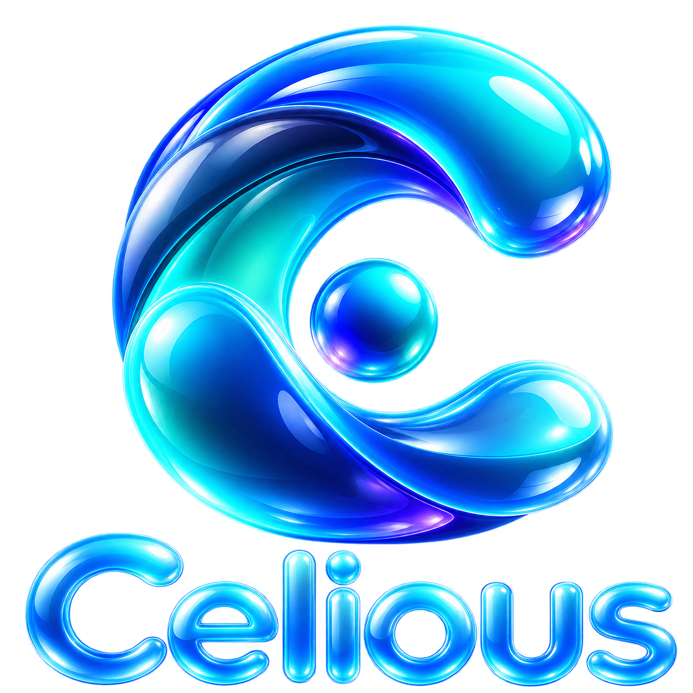

Local knowledge
Documents and project knowledge are kept in ordinary local folders.

CeliousDOCUMENTS · MEMORY · AI
Celious connects AI assistants with documents, spreadsheets and persistent project knowledge.
Local information, connected to AI through MCP.
Documents and project knowledge are kept in ordinary local folders.
Persistent knowledge carries decisions, references and progress across conversations.
Work with authorised files, documents and spreadsheets through connected tools.
ABOUT CELIOUS
Celious is a local digital second brain I developed to connect AI assistants with documents, spreadsheets and persistent project knowledge.
It demonstrates how information can be organised, retrieved and used across conversations, turning existing knowledge into practical actions.
Its architecture combines local information management, persistent memory, controlled file operations and AI integration through the Model Context Protocol (MCP).
Celious is presented as an example of the digital systems I design and develop. Similar solutions can be adapted to an organisation's specific requirements, processes and operational challenges.
Ask your AI assistant to find a project document, check a related spreadsheet and prepare an update to an authorised file. Review the changes before they are applied, then save an important decision to project memory for a later conversation.
Work with existing information through a connected assistant, with the configured access and review steps in place.
ARCHITECTURE
Select a component or follow a workflow. Orbit, zoom and pan to examine how they connect.
WINDOWS CLIENT
The Windows tray application gives the user a visible way to start or stop the connection to the local service.
The panel shows connection status and provides diagnostics and logs.
Explore the connection architecture →DIGITAL SOLUTIONS
Every business works differently. If there are processes that take too much time, information that's difficult to manage, or repetitive tasks you'd like to simplify, I'd be interested in hearing about them.
Let's talk